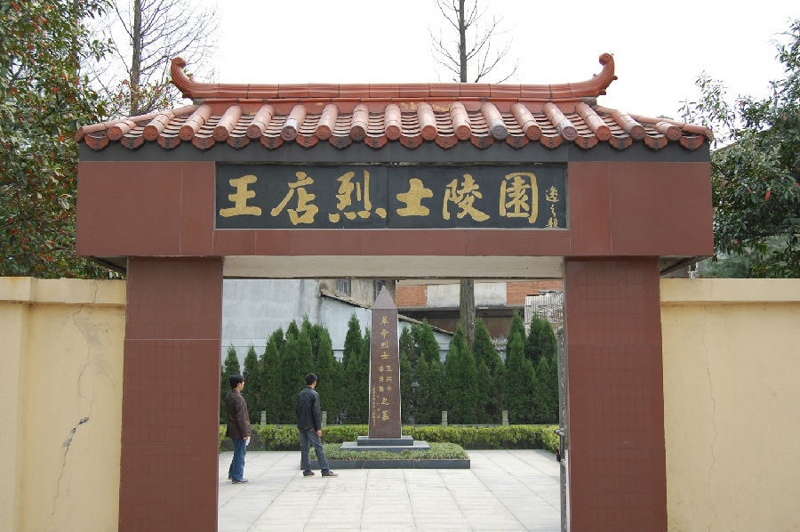

嘉兴市文物保护网 · 市级文物保护点 · 2022-05-16 · 原文

王店革命烈士墓位于秀洲区王店镇梅溪社区梅溪街275弄3号对面，为革命烈士王洪合、李乐楼之墓。王洪合（1919～1949.9），李乐楼（1923～1949.9），山东日照县人，1948年11月随中国人民解放军南下进驻王店地区，分别任第一任区委书记和武装干事，1949年9月7日被土匪头目张春林派人暗杀。新中国成立后，当地党组织把王洪合、李乐楼两位同志列为革命烈士，并于1972年3月在原镇人民公园旧址建起了王洪合、李乐楼烈士陵园，供后人瞻仰。2004年2月，王店镇党委政府和秀洲区民政局对基地进行了恢复性加固，完善了相关配套设施。同年，烈士陵园被列入市级国防教育基地和爱国主义教育基地。陵园占地面积666平方米，大门额题字“王店烈士陵园”，墓道地面用大理石铺设，碑头呈正四棱椎体，主体为正台体。碑身正面由沈如淙题“革命烈士王洪合、李乐楼之墓 嘉兴市秀洲区人民政府立”，四周砌大理石围栏，两边绿化植物以松，柏为主，间杂有假山，碑对面两侧围墙写有“祭奠先烈英灵 继承革命传统”红色大字。该墓主题突出，布局合理，功能齐全，具有较高的历史价值。2021年被公布为嘉兴市文物保护点。